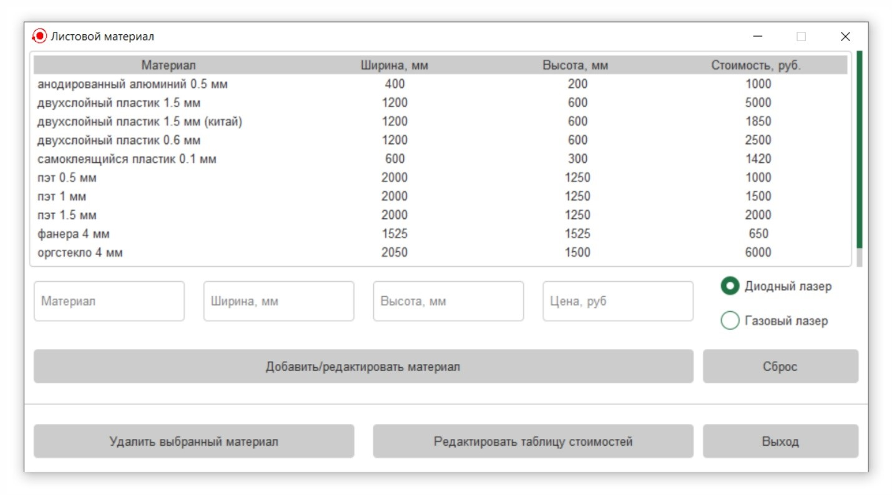
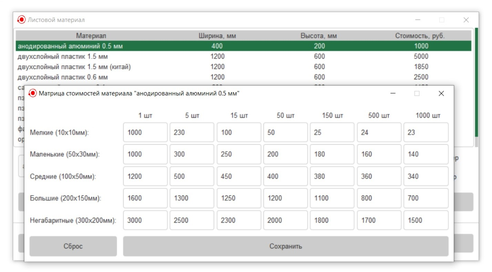

Конфигурация (настройка) списка листового материала осуществляется
в дочернем окне "Листовой материал" (Рисунок 1). Окно можно открыть через
меню: Файл → Листовой материал.

Рисунок 1 - Дочернее окно конфигурации списка листового
материала
Функционал окна:
Добавление нового элемента - необходимо заполнить все
поля ввода, а также выбрать на переключателе тип лазерного
оборудования, на котором изготавливаются изделия из этого
материала. После чего необходимо нажать
на кнопку «Добавить/редактировать материал»;
⚠
Указывать тип лазера очень важно, т.к. для разного типа
оборудования используются разные конфигурации стоимостей в
зависимости от габаритов изделия.
Изменение существующего элемента - необходимо двойным
нажатием на левую клавишу мыши выбрать элемент в таблице (что
позволит заполнить поля ввода данными этого материала), внести
необходимые изменения (важно не забыть выбрать тип оборудования
на переключателе) и нажать на кнопку «Добавить/редактировать
материал»;
Удаление элемента из таблицы - необходимо выбрать в
таблице строку нажатием на левую клавишу мыши, после чего нажать
на кнопку «Удалить выбранный материал»;
Сброс списка материалов и их цен до настроек по
умолчанию осуществляется нажатием на кнопку «Сброс»;
Конфигурация стоимостей изделий из определённого
листового материала осуществляется выбором нужной строки в
таблице и нажатием на кнопку «Редактировать таблицу стоимостей»,
после чего будет открыто дочернее окно редактирования стоимостей
изделий из выбранного материала (Рисунок 2). После внесения
изменений в окне необходимо сохранить изменения нажатием на
кнопку «Сохранить». Для сброса цен необходимо нажать на кнопку
«Сброс».

Рисунок 2 - Дочернее окно редактирования цен
изделий из листового материала